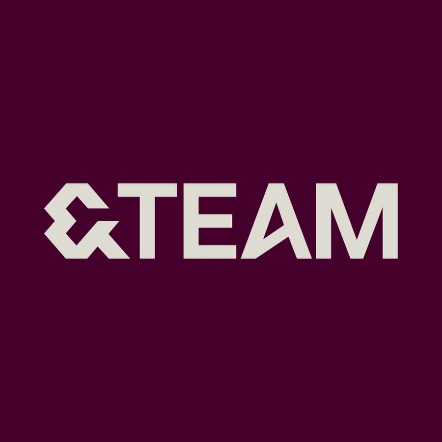

J-POP / IDOL
&TEAM
2026년 10월 3일(토) 오후 6:00, 2026년 10월 4일(일) 오후 5:00 · KSPO DOME확인된 공연 일정
이번 내한은 2회 공연으로 진행됩니다. 날짜별 공연 시각과 예매 조건이 달라질 수 있으므로 선택한 회차를 확인하세요.
예매 조건·티켓 안내
확인된 공연별 조건입니다. 가격은 공연 정보 요약에서 확인할 수 있습니다. · 마지막 확인 2026-09-23
회차별 시작 시각
| 공연일 | 시작 시각 |
|---|---|
| 2026년 10월 3일(토) | 오후 6:00 |
| 2026년 10월 4일(일) | 오후 5:00 |
- 선예매·일반예매 조건
- 멤버십 인증은 2026년 8월 3일 12시부터 8월 10일 23시 59분까지, 멤버십 선예매는 8월 10일 20시부터 23시 59분까지 진행됐습니다. 일반예매는 8월 11일 20시에 시작했습니다. 현재 잔여석·매진 여부는 이 안내에 기록하지 않으며 공식 예매 페이지에서 확인해야 합니다. 10월 3일은 오후 6시, 4일은 오후 5시 시작으로 하루 차이가 있습니다.
- 본인 확인
- 공식 글로벌 예매 안내에는 인증된 계정과 여권 기반 본인 확인, 현장 신원 확인 절차가 적혀 있습니다. 휠체어석은 예매자 본인만 현장 수령할 수 있고 양도가 불가하다고 안내되지만, 일반 티켓의 양도 가능 여부는 확인되지 않았습니다.
- 티켓 수령·모바일 티켓
- 모바일 티켓으로만 입장하며 실물 티켓·현장 발권은 제공되지 않는다고 안내됩니다. 현장 본인 확인 뒤 손목밴드를 받으며 권종·구역별 입장 시각이 다를 수 있으므로, 예매자 정보와 신분증을 대조하고 해당 회차의 최신 안내에서 입장 시간을 확인하세요.
- 취소표가 풀리는 방식
- 공식 안내에서 취소표의 고정 재오픈 시각은 확인되지 않았습니다. 예매 변경·취소 조건은 NOL 예매 내역의 최신 규정을 확인하세요.
아티스트 소개
보컬과 퍼포먼스를 함께 설계하는 일본의 글로벌 그룹입니다. 멤버별 음색과 단체 안무가 빠르게 교차하는 곡에서 무대 전체의 대형과 호흡이 특히 선명하게 드러납니다.
&TEAM 아티스트 페이지 →공연장 안내
지하철 5호선·9호선 올림픽공원역 또는 9호선 한성백제역을 이용할 수 있습니다. 공연 종료 후 역과 주차장이 혼잡하므로 대중교통 이용과 여유 있는 귀가 동선을 권합니다.
KSPO DOME 현장 가이드 보기 →공연 당일 공통 준비
공식 대표곡 영상
&TEAM 공연을 더 잘 즐기는 법
여일육 작성 · 편집·검증 기준 · 마지막 일정 검증 2026-09-23
이번 공연의 관전 포인트
&TEAM의 무대는 여러 멤버가 짧은 구절과 후렴을 나눠 완성하는 퍼포먼스를 한 화면에서 따라가는 데 재미가 있습니다. 처음 보는 관객이라면 한 곡의 센터만 보기보다 보컬 파트가 넘어갈 때 대형 화면, 안무 대형과 멤버의 위치가 어떻게 바뀌는지 함께 보면 무대의 연결이 더 선명해집니다. 이번 서울 앙코르 공연은 10월 3일과 4일의 시작 시각이 다르므로, 관람일을 고른 뒤 이동·귀가 계획을 별도로 맞추는 것이 좋습니다.
공연장 도착과 귀가 계획
좌석을 고르기 전에는 M&G석·SOUND CHECK석·일반석의 가격뿐 아니라 각 권종에 포함되는 당일 운영 조건을 공식 예매 페이지에서 다시 비교하세요. 모바일 티켓과 현장 본인 확인이 안내된 공연이므로 예매자 계정 정보와 여권·신분 확인 정보가 맞는지 출발 전에 확인해야 합니다. KSPO DOME의 실제 게이트·집합 장소·재입장·임시 보관은 고정 정보가 아니므로, 공연 전날 공식 예매처·주최사 공지와 공연장 공식 안내도를 함께 확인하는 순서가 안전합니다.
공식 출처와 검증 기록
일정 확인 2026-09-23 · 가격 확인 2026-09-23 · 판매 상태 확인 미확인 · 본문 수정 미기록